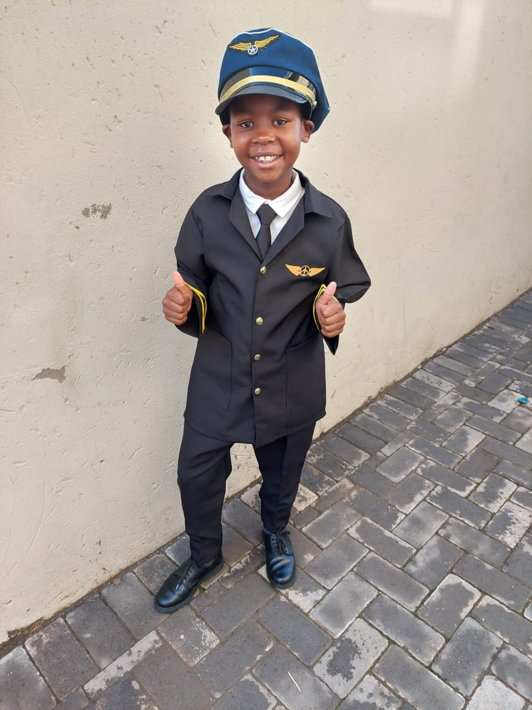
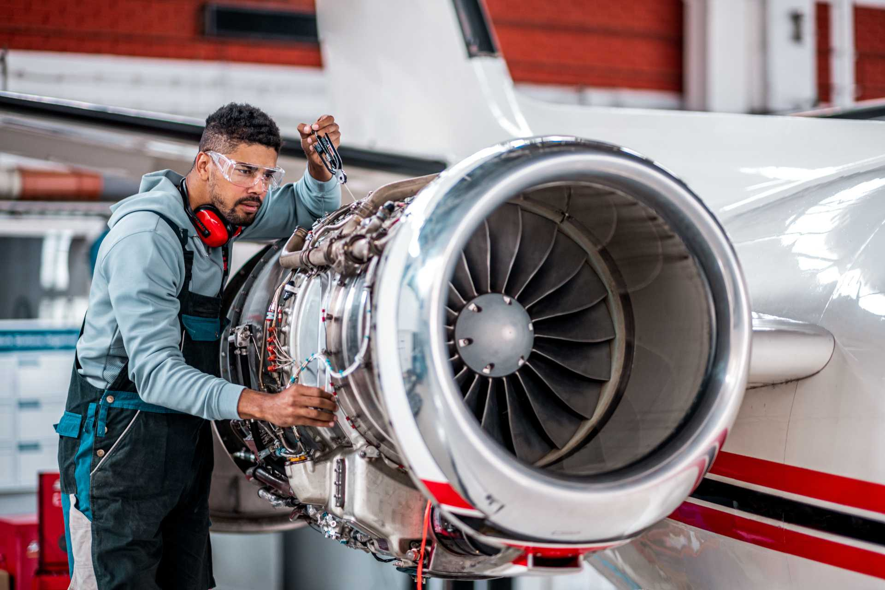

Why is the Aviation Industry Important?
The aviation industry holds paramount importance in the modern world due to its multifaceted
impact on global economies, societies, and international relations.
Economically, it serves as a significant engine, generating millions of jobs worldwide.
Beyond the airline workforce, it creates employment in areas like aircraft manufacturing,
maintenance, airport operations, and various service sectors. This industry's vast economic
footprint stimulates growth, fosters innovation, and contributes substantially to the GDP of
countries, making it a cornerstone of economic prosperity.
Pilot

A pilot is a person who is trained and certified to operate an aircraft, such as an airplane or helicopter.
Pilots undergo extensive training and education to obtain the necessary skills
and knowledge to safely and effectively operate aircraft. Essentially the job of a Pilot
requires detail to precision and focus, like any other transporting job the lives of other people depend on the
person controlling the vehicles or mode of transport in use. A quote by Leonardo Da Vinci "For once you have tasted
flight, you will forever walk the earth with your eyes turned skyward. For there you have and and there you will
always long to return."
Air Traffic Controller

An air traffic controller is a professional responsible for coordinating the movement of aircraft in controlled
airspace and on the ground at airports.
Their primary goal is to ensure the safe and efficient flow of air traffic.
Air traffic controllers use radar, radio communication,
and other tools to provide instructions to pilots, such as altitude assignments, route changes, and sequencing for takeoffs and landings.
Air traffic controllers work in control towers at airports, area control centers, and en-route centers.
They are trained to handle various types of aircraft, including commercial airplanes, private jets, helicopters, and military aircraft.
Aircraft Maintenance Technician

An Aircraft Maintenance Technician (AMT), also known as an Aircraft Mechanic, is a skilled professional responsible for ensuring the safety
and airworthiness of aircraft. They inspect, maintain, and repair various components of airplanes and helicopters to ensure they operate safely
and efficiently. Their work is crucial in maintaining the integrity of the aircraft and ensuring the safety of passengers and crew members. AMTs
inspect aircraft regularly to identify and diagnose issues. They use a variety of tools, equipment, and testing devices to detect problems, including
mechanical, electrical, and structural issues. AMTs perform scheduled maintenance tasks and repairs based on manufacturer guidelines and regulatory
requirements.
Flight Attendant

A flight attendant, also known as cabin crew or steward/stewardess, is a trained professional responsible for ensuring the safety, comfort, and
well-being of passengers aboard commercial flights. Their primary role is to assist and attend to passengers during the flight, including tasks
such as conducting pre-flight safety demonstrations, serving meals and beverages, and providing information and assistance as needed. Flight attendants
are also trained to handle various emergency situations, including evacuations, turbulence, medical incidents, and security threats. They play a
crucial role in maintaining a safe and secure environment on the aircraft, following strict protocols and procedures set by aviation regulatory
authorities and airlines.